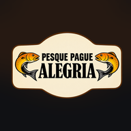

Sem conexão com a internet.
Para consultar horários atualizados, fotografias e informações do pesqueiro, conecte-se à internet e tente novamente.
Tentar novamente
Para consultar horários atualizados, fotografias e informações do pesqueiro, conecte-se à internet e tente novamente.
Tentar novamente